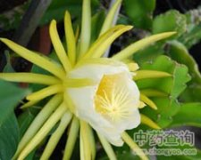

剑花

拼音
Jiàn Huā
别名
量天尺花、霸王花（《岭南采药录》），昙花（《广州植物志》），七星剑花、龙骨花（《广东中药》Ⅱ），霸王鞭（广州空军《常用中草药手册》）。
来源
为仙人掌科植物量天尺的花。夏、秋间采收净花，纵向切开（基部相连），略蒸后，晒干。
生境分布
生长于废墙上或树上，庭园中有栽培。产广东。
药材特点
量天尺（《岭南采药录》） 多年生攀援植物。茎极延长，长约8米或更长，利用气根攀登于灌木或乔木上或墙上，绿色、肉质，常收缩成节，有阔棱3条，棱边作波浪形。叶退化，于棱边腋间有小窝孔，窝孔间的距离4～5厘米，有小刺1～3枚。花单生，于晚上开放，日间闭合，长25～30厘米；花萼花瓣状，黄绿色，裂片厚，披针形，外反，萼管有大鳞片，无刺；花瓣纯白色，直立；雄蕊多数，2列，乳白色；子房下位，花柱1枚，柱头分裂，裂片乳白色。肉质浆果椭圆形，长约10厘米，红色，有鳞片，熟时近平滑。花期夏、秋。
性状
干燥花呈不规则的长条束状，长约15～17厘米。花被棕褐色或黄棕色。萼管细长部扭曲呈条束状，外侧有皱缩的鳞片。上端花被狭长披针形，有纵脉，往往数轮粘贴在一起。花被内有多数雄蕊。气微弱，味稍甜。以朵大、色鲜明、味香甜者为佳。
性味
《广东中药》Ⅱ："甘，微寒。"
功能主治
①《岭南采药录》："止气痛，理痰火咳嗽，和猪肉煎汤服之。" ②广州空军《常用中草药手册》："清热润肺，止咳。治肺结核，支气管炎，颈淋巴结结核，腮腺炎。"
用法用量
内服：煎汤，3～5钱。
化学成分
全草中曾分离出卅一烷和β-谷甾醇。
药理作用
1：无药理作用
摘录
《中药大辞典》